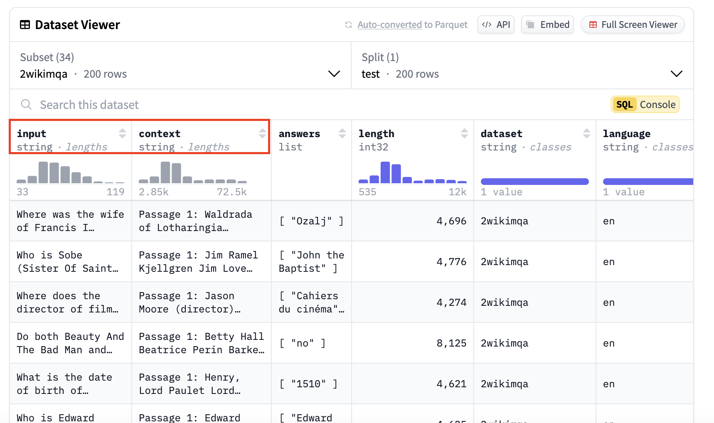
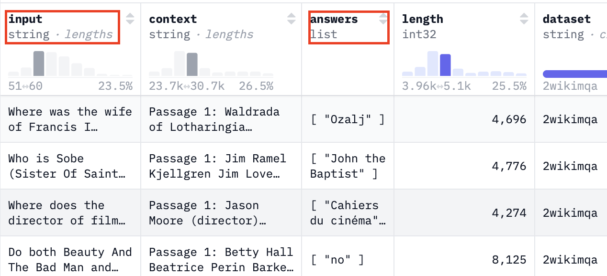
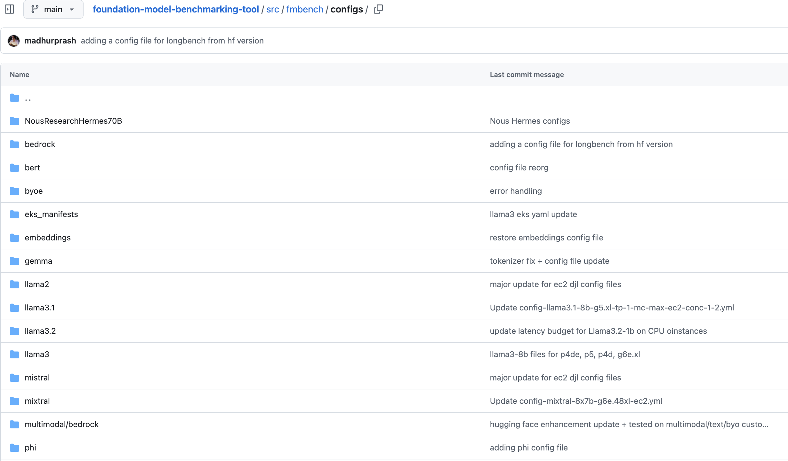

Customize config files for specific use cases¶
Overview¶
To run FMBench, you have to provide a configuration file. A configuration file is simple yml file that contains the information about the models to benchmark, dataset information, prompt templates, custom thresholds for latency, cost and accuracy and other important metrics. View an annotated config file here. A typical FMBench workflow involves either directly using an already provided config file from the configs folder provided in the FMBench website or Github repo or editing an already provided config file as per your own requirements (for example, benchmarking on a different instance type, or a different inference container, or even with custom datasets and various models).
In this documentation, we will do a walkthrough of the different sections that you can change within the config file based on your specific use case and requirements. We will take an example of a user who wants to create a config file for NousResearch/Hermes-3-Llama-3.1-70B model on a trn1.32xlarge EC2 instance.
Note: This lab is not a hands-on lab. It is a walk through of a sample configuration file that FMBench uses to benchmark any Foundation Model (FM) on any AWS generative AI service and description of sections that users can tweak for their own use case.
Let's get started:
FMBench Configuration Walkthrough¶
Let's take an example to walk through a sample config file. Say a user is interested in using llama3-70b for their question-answering and doc-summarization use cases. A couple of questions they would ask themselves before beginning the benchmarking process is: Which model should I use? Should it be open-source/closed-source or proprietary fine-tuned models?, What instance should I host this model on so I can get my minimum requirements for latency, cost and accuracy satisfied?, Which dataset should I use - is there an open source data that I can use as a representation of my own dataset, or can I benchmark using my custom enterprise data? How do I compute pricing? What are the ways I can evaluate my models on accuracy? and so on.
The FMBench configuration file takes away the cognitive burden to figure out the answer to these questions and organizing them into parameters for model id, instance types, inference containers, datasets to use, and various other metrics that play a role in model performance and accuracy. The FMBench config file is broadly divided in the following:
Model Information¶
To decide on which model to use, on a given instance type and container, fill out the information in the experiments section of the configuration file. This experiments section contains configuration about experiments to be run. The experiments section is an array so more than one experiments can be added, these could belong to the same model but different instance types, or different models, or even different hosting options. Each experiment represents model under test and the specific information associated to that model. View an example below.
experiments:
- name: "Hermes-3-Llama-3.1-70B"
region: {region}
model_id: NousResearch/Hermes-3-Llama-3.1-70B #model id, version and image uri not needed for byo endpoint
hf_tokenizer_model_id: meta-llama/Llama-3.1-70B
model_version:
model_name: "Hermes-3-Llama-3.1-70B"
ep_name: 'http://localhost:8080/v2/models/Hermes-3-Llama-3.1-70B/generate'
instance_type: "trn1.32xlarge"
image_uri: tritonserver-neuronx:fmbench
deploy: yes #setting to yes to run deployment script for ec2
instance_count:
deployment_script: ec2_deploy.py
inference_script: ec2_predictor.py
# This section defines the settings for Amazon EC2 instances
ec2:
model_loading_timeout: 10000
inference_spec:
parameter_set: ec2_djl
container_type: triton
# For deploying a model using the triton inference container:
# mention the backend type, if any. Options for triton are: [djl, vllm or tensorrt]
backend: djl
# how many copies of the model, 1, 2,..max
# set to 1 in the code if not configured,
# max: FMBench figures out the max number of model containers to be run
# based on TP degree configured and number of neuron cores/GPUs available.
# For example, if TP=2, GPUs=8 then FMBench will start 4 containers and 1 load balancer,
# auto: only supported if the underlying inference container would automatically
# start multiple copies of the model internally based on TP degree and neuron cores/GPUs
# available. In this case only a single container is created, no load balancer is created.
# The DJL serving containers supports auto.
model_copies: max
shm_size: 12g
# The model.json parameters are replaced within the model.json file
# for the triton on vllm/djl/tensorrt options. The model.json already contains
# the tp degree and model id from above in this config file. This is a dictionary
# that contains other variables, such as max_num_seqs, dtype, max_model_len, block_size and more
# For tensorrt, the tp degree, batch size and other relevant parameters are
# extracted directly from the inference spec.
container_params:
# tp degree is a mandatory parameter
tp_degree: 32
amp: "f16" # and so on
# modify the serving properties to match your model and requirements
serving.properties:
Here are the list of parameters that can be changed based on your use case and models you would like to benchmark:
-
Model Id (
model_id): This is themodel idof the model that you would like to benchmark. This can be any open source model onHuggingFace, aSageMaker Jumpstartmodel, aBedrockmodel, or any Foundation Model that you would like to benchmark on any AWS generative AI service. For this specific example, the user was interested in benchmarking the fine-tuned version ofLlama-3.1-70B, so they pointed themodel_idto the HF model:NousResearch/Hermes-3-Llama-3.1-70B. You can change thenameand themodel_nameparameter to any custom name that you would like to based on themodel_idthat you are using in the config file. -
Tokenizer (
hf_tokenizer_model_id): If your model is a Hugging Face model, and if you would like to use that model's tokenizer, then point thehf_tokenizer_model_idparameter to themodel_idon hugging face and that specific model's tokenizer will be used in the benchmarking test. -
Instance Type (
instance_type): This is the instance type/hardware on which the model is deployed and hosted. In this case, the user was interested to deploy the model on atrn1.32xlargeinstance, so they pointed theinstance_typeparameter totrn1.32xlarge. You can point this parameter to anyinstance_typethat you want to deploy the model on. This can either be aGPU/CPU/AWS Silicon (i.e. inf2/trn1/trn2)instance. View the list of models that have been benchmarked on various instances usingFMBenchhere -
Inference Container (
image_uri): If the user is interested in using a specific container of choice, they can point theimage_uriparameter to that inference container.FMBenchsupports theHF TGI,Triton,Deep Java Library,vLLMandOllamacontainers. This means that the user would not have to write any custom code to deploy the model or benchmark it using any of these containers thatFMBenchprovides built in support for. In this case, the user was interested in benchmarkingNousResearch/Hermes-3-Llama-3.1-70Bon thetritoninference server, so they pointed theimage_uritotritonserver-neuronx:fmbench. Users can bring their own containers and point to that within the configuration file (this would require the user to provide a custom deployment and inference script that supports the deployment and prediction format that the specific inference container supports if it is not already supported onFMBench). -
Inference/Deployment Scripts (
deployment_script,inference_script):FMBenchcomes packaged with multiple inference and deployment scripts. These scripts will deploy models onSageMaker,Bedrock,EC2,EKS, and also support inference on those models based on their respective inference scripts. If users deploy and make inferences from a model using a format that is not already supported onFMBench, users can bring in custom deployment and predictor scripts. Given above is an example for a model deployed on an AmazonEC2instance using theec2_deploy.pydeployment script and make inferences on the model using theec2_predictor.py inference script.To view how you can bring your own custom deployment and inference files toFMBenchto benchmark your custom models, view here. An example custom inference script here that is specified in this configuration file. -
Endpoint Name (
ep_name): This parameter specifies the endpoint URL where the model will be accessible. In the example, it's set to'http://localhost:8080/v2/models/Hermes-3-Llama-3.1-70B/generate'since the model is hosted on an EC2 instance. For models deployed onBedrock, theep_nameis theBedrock model_idsince that is what is used while running inferences against the model. If your model is deployed onSageMaker, then the endpoint name is dynamically created based on what you provide as theep_namein the configuration file. If you already have a model deployed and want to use your own endpoint, you can:- Set
deploy: noin the experiment configuration - Provide your existing
EC2endpoint URL/SageMaker endpoint in theep_namefield - Skip the deployment-specific parameters as they won't be needed
For more information on bringing your own endpoint, view the documentation on it here.
- Set
-
Container Parameters (
container_params/serving.properties): This section allows you to configure model-specific serving parameters such as:tp_degree: Tensor parallelism degree for distributed inferenceamp: Automatic mixed precision settings (e.g., "f16", "bf16")serving.properties: Additional serving configuration parameters specific to your inference container such asmax_rolling_batch_size,n_positions, etc. These parameters are not limited and can be changed/extended based on the parameters supported by your inference container.
Inference Parameters¶
After configuring the model deployment settings, the next step is to specify how you want the model to generate responses. The inference parameters section allows you to customize the generation behavior based on your use case:
These parameters directly affect the model's output and performance characteristics. For example:- For a summarization use case, a user might want to set
max_new_tokensto a higher value like512or1024to allow for comprehensive summaries of longer documents. - For a quick Q&A application, you might keep
max_new_tokenslower at100-200to get concise responses. - The
top_kparameter controls response diversity by limiting the token selection to the k most likely next tokens.
You can add any parameter that your inference container supports. The parameters are organized by deployment type (ec2_djl, SageMaker, bedrock, any custom parameters that you would want to set etc.) to match the parameter_set specified in your experiment configuration. For example, if using Bedrock's model, you would specify bedrock or any custom parameter set name:
Once you have defined your inference parameters, you can point to that inference parameter spec in the experiment section as given below:
yaml
# Model configurations for llama-2 7b for deploying on g5 x and 2x large instances
experiments:
- name: <model_name>
model_id: # model id, version and image uri not needed for byo endpoint
model_version:
model_name: <your-model-name>
ep_name: "<your-endpoint-name>"
.
.
.
inference_spec:
parameter_set: bedrock # you can have a different inference parameter set for each experiment depending on the
# model inference parameters
Use custom datasets & prompts within FMBench¶
FMBench now supports benchmarking models using datasets from Hugging Face with a simplified prefixing method. To specify a Hugging Face dataset and its split, use the hf: prefix followed by the dataset identifier, subset name, and split name. If a subset name is not provided, it defaults to default. If a split name is not provided, FMBench automatically selects the next available split at runtime.
-
To configure your dataset in
FMBench, add entries tosource_data_filesin your configuration file:You can follow this format for anysource_data_files: # Format: hf:dataset-id/subset-name/split-name # If no subset name is provided, use "default". - hf:THUDM/LongBench/2wikimqa_e/test - hf:THUDM/LongBench/2wikimqa/test - hf:THUDM/LongBench/hotpotqa_e/test - hf:THUDM/LongBench/hotpotqa/test - hf:THUDM/LongBench/narrativeqa/test - hf:THUDM/LongBench/triviaqa_e/test - hf:THUDM/LongBench/triviaqa/testtextorimage-baseddataset from Hugging Face. Alternatively, you can use custom datasets inJSONLformat. -
For domain-specific or personalized benchmarking, you can use custom datasets. These datasets can be:
- Synthetic/Open source datasets (available on Hugging Face)
-
Proprietary data (not publicly available)
-
To use custom data, convert it into JSONL format. We provide a sample notebook to help convert Hugging Face or custom datasets into JSONL and upload them to an S3 bucket used by FMBench. Follow the steps in the bring_your_own_dataset notebook to integrate your own dataset into
FMBench. Place theseJSONLfiles in thesource_datadirectory within/tmp/fmbench-read/source_datain your local instance. . -
Use specific keys from the dataset in your prompts: Since
FMBenchusesLongBenchas the dataset under test by default, it requires specific keys that containuser queries,context, or other necessary fields. To specify dataset keys, add them underprompt_template_keysin thedatasetssection of your configuration file:
These keys correspond to fields in the Hugging Face dataset, as shown in the example below:

- Using a Custom Prompt Template: The specified dataset keys can be used in a custom prompt template for generating input payloads. Below is an example of a prompt template utilizing these keys:
<think>
There can be multiple question answer pairs in the context.
As soon as you find the first question in the text below immediately stop reading any further and just answer the question.
Always start your response with "<think>" at the beginning of every output and think step by step.
Keep your thinking process short and your answers concise, do not overthink.
Make sure to always provide an answer, if you do not know the answer then say I do not known but never leave the answer field empty in your response.
</think>
<answer>
Put your final answer in one line starting with the word Answer:
</answer>
Here is the text for you to work on:
<text>
{input}
{context}
</text>
- Adding the Prompt Template to FMBench: To use the custom prompt template, place it in the
/tmp/fmbench-read/prompt_templatesdirectory.FMBenchwill download and apply it during benchmarking.
# prompt template to use, NOTE: same prompt template gets used for all models being tested through a config file
# the FMBench repo already contains a bunch of prompt templates so review those first before creating a new one
prompt_template_file: prompt_template_llama3.txt
Filtering Options: If your dataset contains multiple languages and includes a language field, you can filter it to retain only prompts in a specific language. Additionally, you can filter prompts based on token length, which is determined using the tokenizer specified in the tokenizer_prefix in the S3 bucket. The example below filters for English prompts with a token length between 1,000 and 2,000, saving the results in a designated payload file that FMBench then uses in the benchmarking test. You can filter this based on your custom token length filtering preferences.
datasets:
filters:
- language: en
min_length_in_tokens: 1000
max_length_in_tokens: 2000
payload_file: payload_en_1000-2000.jsonl
Metrics Configuration: Specify dataset_of_interest for focused performance analysis. While the tests would run on all the datasets configured in the experiment entries below but the price|performance analysis is only done for 1 dataset which is listed below as the dataset_of_interest. If a user is interested in seeing model benchmarks for prompt sizes 1000-2000 tokens, then set the dataset_of_interest to en_1000-2000. If it is a summarization use case and your dataset is large enough, you can add a filter to use payload_en_3000-3840.jsonl and set the dataset_of_interest to en_3000-3840 tokens. This can be any custom value.
Bring your own Endpoint (BYOE Configuration)¶
-
You can customize FMBench to use the BYOE mode when you want to bring an already deployed model either on AWS or your custom infrastructure.
-
Point the
ep_nameparameter in your configuration file to theendpoint URLso thatFMBenchcan use it while making predictions. Viewhere.
get_predictions method and the endpoint_name property. Specify the name of that file in the config file next to the inference_script parameter here. No deployment script is needed since you are bringing your own endpoint.
# FMBench comes packaged with multiple inference scripts, such as scripts for SageMaker
# and Bedrock. You can also add your own. This is an example of a custom rest predictor
# that does a POST request on the endpoint URL with custom headers,
# parameters and authentication information
inference_script: custom_rest_predictor.py
-
Place your custom FMBench predictor (custom_rest_predictor.py) in your EC2
/tmp/fmbench-read/scriptsdirectory. View an example of an inference file that you can use here: https://github.com/aws-samples/foundation-model-benchmarking-tool/blob/main/fmbench/scripts/custom_rest_predictor.py. -
Set the
deployvariable in the experiments section of the config file tonobecause the model does not have to be deployed since this is abyoemode. Set the2_deploy_model.ipynbnotebook in therun_stepssection toyes. Even though the model is not deployed, the notebook will identify thatdeployfrom the experiments section is set tonoand just log the provided endpoint for further use.
## section that enables container to run notebooks and python scripts automatically
run_steps:
0_setup.ipynb: yes
1_generate_data.ipynb: yes
2_deploy_model.ipynb: yes # Set the deploy notebook to yes. This will not deploy the model, but will identify that the `deploy` variable in the `experiments` section below is set to 'no',
# and will just log the endpoint provided for further use in the benchmarking test
3_run_inference.ipynb: yes
4_model_metric_analysis.ipynb: yes
5_cleanup.ipynb: no
.
.
.
.
experiments:
- name: bring-your-own-sm-endpoint
model_id: # model id, version and image uri not needed for byo endpoint
model_version:
deploy: no # set deploy to "no" in the experiments section because the model does not have to be deployed since this is a byoe mode
model_name: <your-model-name>
ep_name: "<your-endpoint-name>"
instance_type: "<your-instance-type>"
- Build FMBench as per instructions here. This will install a developer version of FMBench in your Python venv.
After following these steps, you will be able to run FMBench with your own endpoint. FMBench will utilize the custom FMBench predictor and run inferences against the endpoint. All raw inferences are saved in a per_inference directory and used in the report generation process. Follow the steps in the next section to bring your own dataset and prompt templates.
Pricing Information¶
FMBench measures model performance, which translates into inference latency, token throughput and cost per transaction. The cost is determined by FMBench in two ways: instance based pricing or token based pricing. All pricing information is stored in a pricing.yml which contains hourly instance based pricing (for example Amazon EC2 instances) and token based pricing (for example Amazon Bedrock). The existing file contains several prices for instances on Amazon EC2 and SageMaker. To bring your own pricing, simply specify the name of your instance type followed by the custom hourly/token-based price and FMBench will use that pricing in the benchmarking test.
Add your pricing in the pricing.yml file:
instance_based:
your-custom-instance-type: <your-pricing>
token_based:
<your-model-id>:
input-per-1k-tokens: <custom price per 1k input tokens>
output-per-1k-tokens: <custom price per 1k output tokens>
Note: Make sure the instance type specified in your FMBench config file matches the instance type specified in the pricing.yml file so that FMBench can correctly map the cost during the test. Place the pricing.yml file in the /tmp/fmbench-read/configs directory.
Model Evaluations¶
Accuracy is defined as percentage of responses generated by the LLM that match the ground truth included in the dataset (as a separate column). In order to determine if an LLM generated response matches the ground truth we ask other LLMs called the evaluator LLMs to compare the LLM output and the ground truth and provide a verdict if the LLM generated ground truth is correct or not given the ground truth. Here is the link to the Anthropic Claude 3 Sonnet model prompt being used as an evaluator (or a judge model). A combination of the cosine similarity and the LLM evaluator verdict decides if the LLM generated response is correct or incorrect. Finally, one LLM evaluator could be biased, could have inaccuracies so instead of relying on the judgement of a single evaluator, we rely on the majority vote of 3 different LLM evaluators. By default we use the Anthropic Claude 3.5 Sonnet V2, Meta Llama3.3-70b Instruct and the Cohere Command R plus model as LLM evaluators. See Pat Verga et al., "Replacing Judges with Juries: Evaluating LLM Generations with a Panel of Diverse Models", arXiv:2404.18796, 2024. for more details on using a Panel of LLM Evaluators (PoLL). The following file in the configuration file contains judge model information, prompt templates used for evaluations, inference parameters, etc.
# name of the file that contains the model evaluation information
# for example, the prompt template names, the ground truth column name (if any),
# LLM panelist information, inference parameters, etc.
model_evaluations: model_eval_all_info.yml
For more information on model evaluations using FMBench view this notebook and this documentation.
- This file contains information about metrics and the LLM judges (with their inference parameters) that will be used while evaluating candidate models. To add the evaluation step to
FMBench, add it as a step underrun_stepssection in the configuration file (view step 4):
run_steps:
0_setup.ipynb: yes
1_generate_data.ipynb: yes
2_deploy_model.ipynb: no
3_run_inference.ipynb: yes
4_get_evaluations.ipynb: yes
5_model_metric_analysis.ipynb: yes
6_cleanup.ipynb: no
FMBench's panel of LLM judges uses the model responses and compares it to the ground truth provided in the dataset. If there is a ground truth column, replace the following parameters with the name of the column. The ground truth and question column keys can be fetched from the Hugging Face dataset or your custom dataset. View an example below:

Then, use the question and ground truth key from the dataset below in the configuration file. This will be used by FMBench's evaluators to evaluate the correctness of models to be benchmarked.
# Represents the column with the ground truth
ground_truth_col_key: answers
# Represents the column with questions/instructions
question_col_key: input
Benchmarking Thresholds & components¶
The report section allows you to set specific performance thresholds and constraints for your use case. These thresholds help determine whether a model deployment configuration meets your requirements:
report:
latency_budget: 3
cosine_similarity_budget: 0.3
accuracy_budget: 1
accuracy_error_rate_budget: 0
cost_per_10k_txn_budget: 200
error_rate_budget: 0
In this use case, the user was interested in getting responses to questions within 3s with a cost budget of $200 per 10k transactions. If the user has a more real-time application, they can set the latency_budget to 1s or lower to get the most optimal model serving stack that satisfies that requirement. User's can also set accuracy thresholds in their report. If they are evaluating whether model responses are accurate compared to ground truth provided in the dataset, they can set an accuracy budget and a cosine similarity budget that are paired together to determine the accuracy of a response.
Run Steps Configuration: The FMBench workflow consists of several sequential notebooks that handle different aspects of the benchmarking process, from setup to cleanup. Each step can be enabled or disabled using the run_steps configuration in the YAML file. While typically all steps would run in sequence, you have the flexibility to skip certain steps by setting them to no if you've already completed them or want to rerun specific analyses. For example, if you've already deployed your model and generated/collected inference data, you could set 2_deploy_model.ipynb and 3_run_inference.ipynb to no and only run the analysis notebooks with different parameters - this is particularly useful when you want to experiment with different performance thresholds (like adjusting latency budgets or cost constraints) without having to redeploy models or rerun inferences.
# steps to run, usually all of these would be
# set to yes so nothing needs to change here
# you could, however, bypass some steps for example
# set the 2_deploy_model.ipynb to no if you are re-running
# the same config file and the model is already deployed
run_steps:
0_setup.ipynb: yes
1_generate_data.ipynb: yes
2_deploy_model.ipynb: no
3_run_inference.ipynb: yes
4_get_evaluations.ipynb: yes
5_model_metric_analysis.ipynb: yes
6_cleanup.ipynb: no
Resources:¶
FMBench provides several configuration files for benchmarking models on Bedrock, SageMaker, EC2, Bring your own endpoint, EKS, etc. These configuration files can be found on the FMBench Github repo here:
